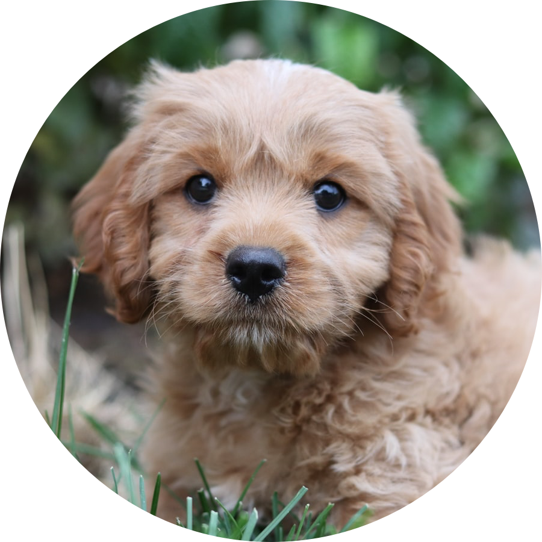

The Upper Hutt Animal Rescue Society
Wellington, New Zealand
The Upper Hutt Animal Rescue Society exists to care for and find homes for animals. (mainly cats, kittens and rabbits) which come into care. We do this by: Taking in animals which are unwanted or stray, or are relinquished by their owners due to hardship, moving house, death of owner or owner going into care. Vaccination and desexing these animal while providing for their welfare (food, shelter and vetinerary care. We also assist owners of cats with kittens to have these desexed. Applying at all times our “no kill” policy as set out in our Constitution. Finding good ‘forever’ homes for these animals or if this is not possible to care for the animal at our Haven property or through our “long term fostering” programme.
Wellington, New Zealand
The Upper Hutt Animal Rescue Society exists to care for and find homes for animals. (mainly cats, kittens and rabbits) which come into care. We do this by: Taking in animals which are unwanted or stray, or are relinquished by their owners due to hardship, moving house, death of owner or owner going into care. Vaccination and desexing these animal while providing for their welfare (food, shelter and vetinerary care. We also assist owners of cats with kittens to have these desexed. Applying at all times our “no kill” policy as set out in our Constitution. Finding good ‘forever’ homes for these animals or if this is not possible to care for the animal at our Haven property or through our “long term fostering” programme.